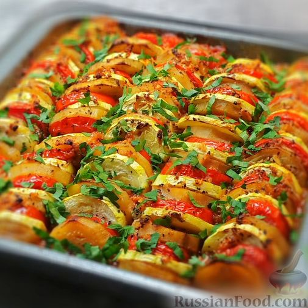
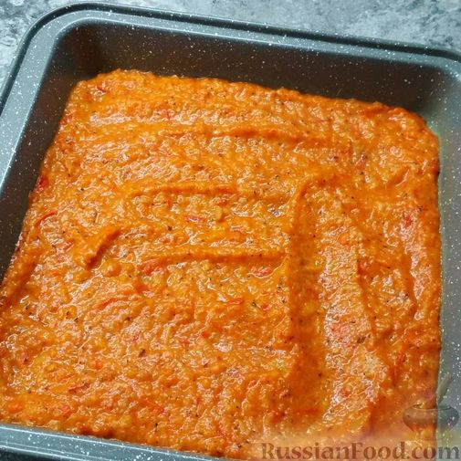
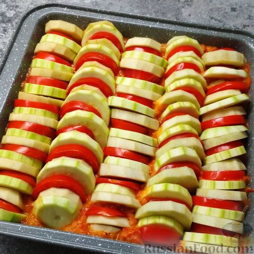
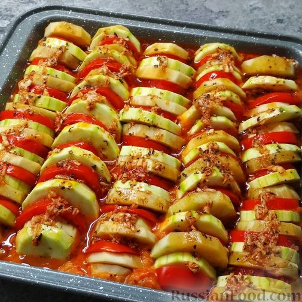
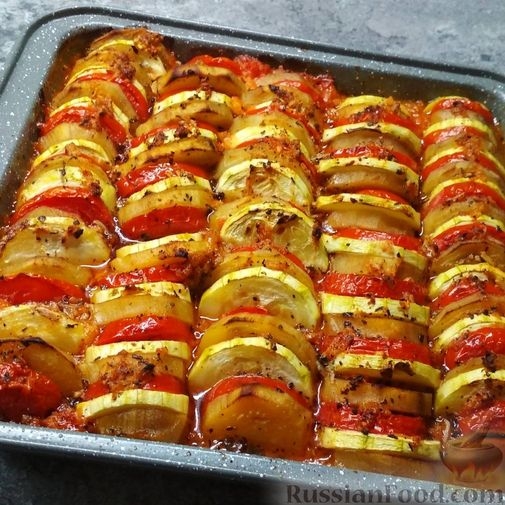

Рататуй

Продукты
Баклажаны - 600 г (2 шт.)
Кабачки - 600 г (2 шт.)
Помидоры - 1 кг (7 шт.)
Лук репчатый - 150 г (2 шт.)
Перец болгарский - 400 г (4 шт.)
Чеснок - 4 зубчика
Масло оливковое - 100 мл
Паприка молотая - 1 ч. ложка
Травы прованские сушёные - по вкусу
Зелень петрушки (для подачи) - по вкусу
Соль - по вкусу
Способ приготовления

1.Мелко нарезанный лук обжарить до прозрачности на 2 ст. ложках оливкового масла, посолить.
С 3-х помидоров снять кожицу.
У болгарского перца удалить плодоножки и семена. Помидоры и перец нарезать кубиками и добавить к луку. Обжаривать овощи в течение 10-ти минут. Затем измельчить обжаренные овощи блендером до желаемой консистенции.
Готовый соус ровным слоем выложить на дно формы для запекания.

2. Включить духовку и разогреть до 180°С.
Вымытые и очищенные от кожицы кабачки и баклажаны, а также оставшиеся помидоры нарезать кружочками толщиной 5 мм и выложить сверху на соус, чередуя. Посолить.

3. Сверху смазать оливковым маслом, смешанным с измельчённым чесноком, молотой паприкой и прованскими травами.

4.
Накрыть форму фольгой и отправить в духовку, нагретую до 180°С, на 30 минут.
Затем фольгу снять, запекать ещё 20 минут.
5. Готовый рататуй посыпать мелко нарезанной свежей зеленью.
Приятного аппетита!